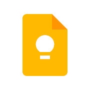

Удобное приложение для создания заметок, которыми можно делиться с родными и друзьями. Записывайте идеи и планы, составляйте списки покупок и получайте своевременные напоминания. Вы можете сфотографировать афишу, рецепт или документ, чтобы потом быстро найти снимок в Google Keep. А если у вас заняты руки, создайте голосовую заметку, и она автоматически преобразуется в текст.
Разные типы заметок • Создавайте списки, текстовые, фото- и аудиозаметки. Последние автоматически преобразуются в текст. Общий доступ к заметкам • Открывайте доступ к своим заметкам и редактируйте их одновременно с друзьями. Быстрый поиск • Выделяйте заметки цветом, добавляйте к ним ярлыки и пользуйтесь функцией поиска. Доступ с любого устройства • Пользуйтесь Google Keep на телефоне, планшете, компьютере или часах Android Wear. Заметки синхронизируются автоматически, поэтому они всегда доступны вам на любом устройстве. Вы можете найти их на сайте http://keep.google.com, а также скачать Google Keep в Интернет-магазине Chrome: http://g.co/keepinchrome. Своевременные напоминания • Создавайте напоминания, указывая время или место. Когда вы будете рядом с указанным адресом, Google Keep покажет напоминание.
Разрешения – Доступ к камере необходим, чтобы вы могли прикреплять фотографии к заметкам. – Доступ к контактам нужен, чтобы вы могли получать подсказки, когда открываете доступ к заметкам. – Доступ к микрофону требуется, чтобы вы могли создавать голосовые заметки. – Доступ к данным о местоположении необходим, чтобы показывать своевременные напоминания. – Доступ к памяти нужен, чтобы вы могли прикреплять к заметкам файлы с накопителя.